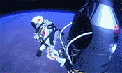

Limitless Skies
By: Navpreet Langa
"Sometimes you have to go up really high to understand how small you are." That's what Felix Baumgartner said right before he jumped out of a capsule floating approximately 39 kilometers, 21 miles, above the Earth's surface. Fortunately, on October 14, 2012, Fearless Felix's jump from the edge of the Earth's stratosphere proved to be successful. Sponsored by Red Bull, this mission took five years to plan and not only did Felix land safely, he also created a record for highest altitude reached in a manned balloon flight, while breaking two others for highest parachute jump and free fall speed.
Born on 20 April 1969, in Salzburg, Austria, Felix Baumgartner is a professional skydiver, B.A.S.E jumper and a Red Bull Stratos pilot at the current age of 43. With a passion for flight as well as height, he made his first skydiving jump at the age of 16. Even before the highest jump in his career, he had broken many records for B.A.S.E jumping and was known for his free fall flight across the English Channel using a carbon wing.
As a part of the Red Bull Stratos mission to challenge human limitations, Felix Baumgartner, along with a team of experts, began preparing for the biggest jump in history yet. To help guide Felix was his mentor, Joe Kittinger, who set a record for the highest free fall on August 16, 1960, from a height of 102,800 feet. This mission was originally scheduled for the 9th of October but was later postponed due to the weather conditions. After multiple test jumps before hand from lower altitudes, on the morning of October 14th, Felix finally made his way to the Roswell launch site in New Mexico. Before he mounted the helium balloon that he would ascend in, he said goodbye to his friends and family for what may have been the last time, as no one knew for certain whether he would survive or not. Felix sat buckled in a chair in the capsule, wearing a special astronaut's suit specially designed to protect him during the mission. The whole scene was broadcasted live on television and through Internet as millions of people worldwide tuned in to watch history being made.
After two hours, Felix finally reached his target height of 128,100 feet and jumped. He was in free fall for 4:22 minutes with a total descend time of 9:09 minutes, including the parachute descend. At that time, Felix Baumgartner became the first man to break the sound barrier without a vehicle. He broke the record for the highest altitude reached by a manned balloon and the highest free fall, but could not break the record for the longest free fall, which was set by his very own project mentor, Joe Kittinger. Through this mission, Felix has helped gather important information, which can help scientists further understand how the human body copes with extreme conditions near space. However, for Baumgartner, skydiving ends here. His current plans include settling in with his girlfriend Nicole Oettl and working as a rescue pilot.
Over the past couple of weeks, Baumgartner has achieved the status of a celebrity through his daring jump and has become a living inspiration for many. Many people did not believe that he was going to survive, as no one knew what happens to a human body when it breaks the sound barrier, but Felix risked it all for the name of science. He truly went by the words, "You will never know unless you try." |